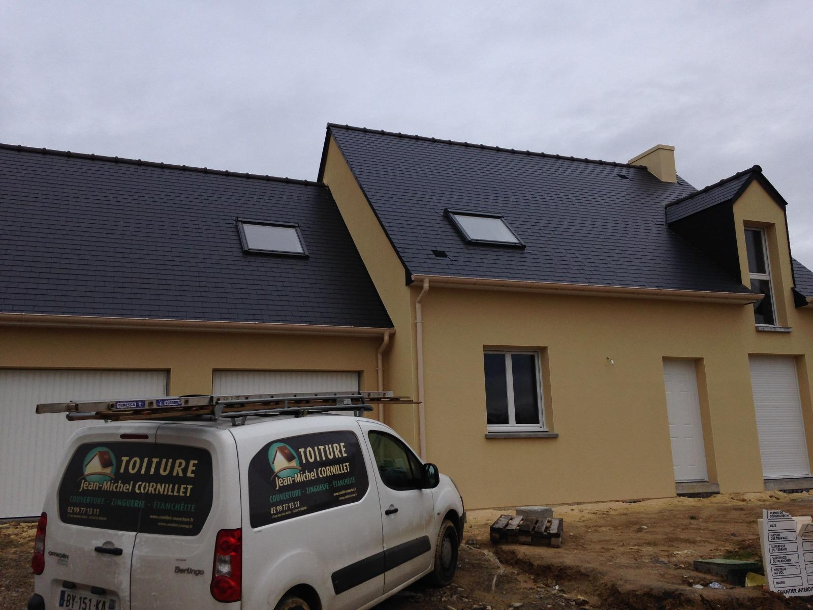
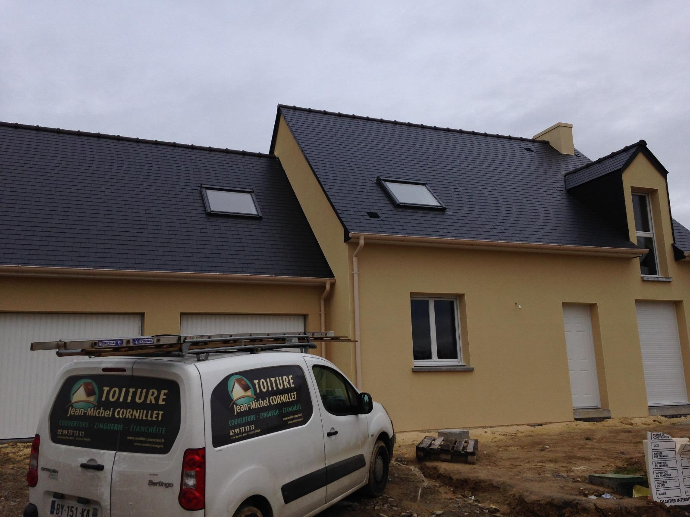
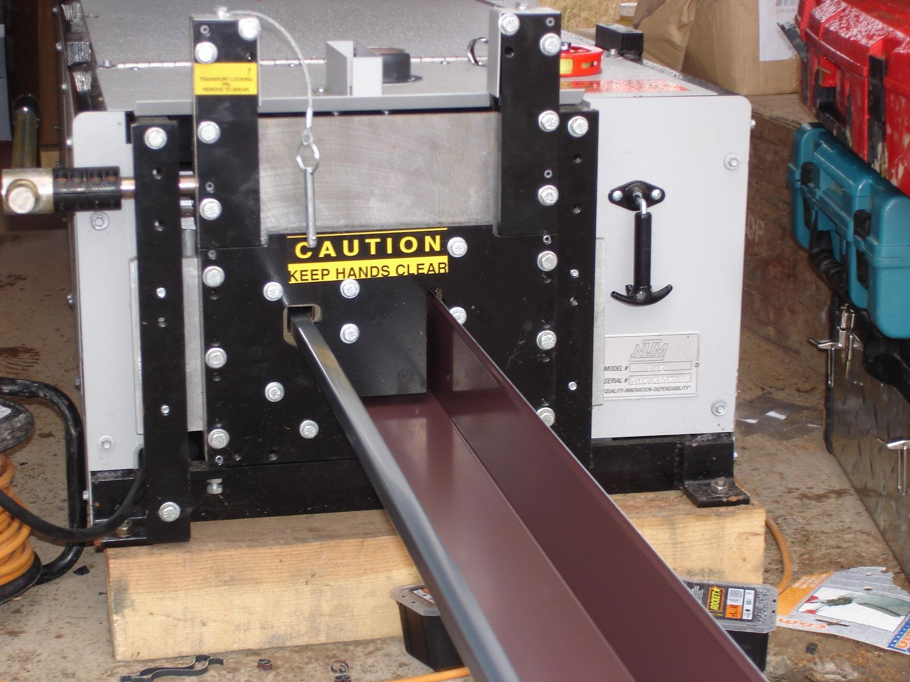
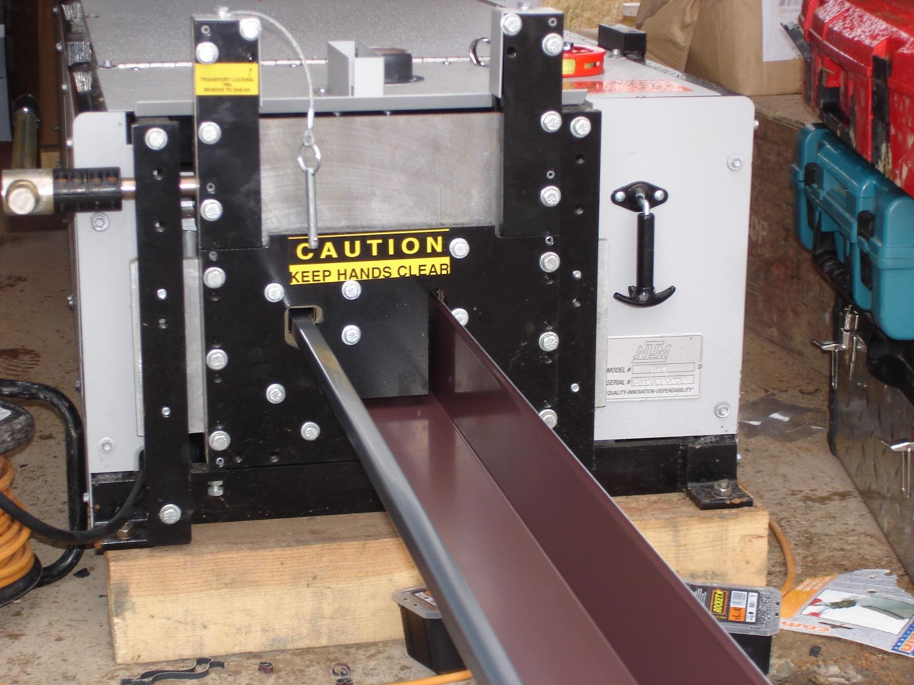
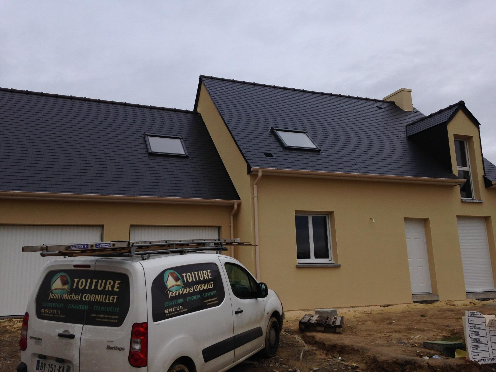
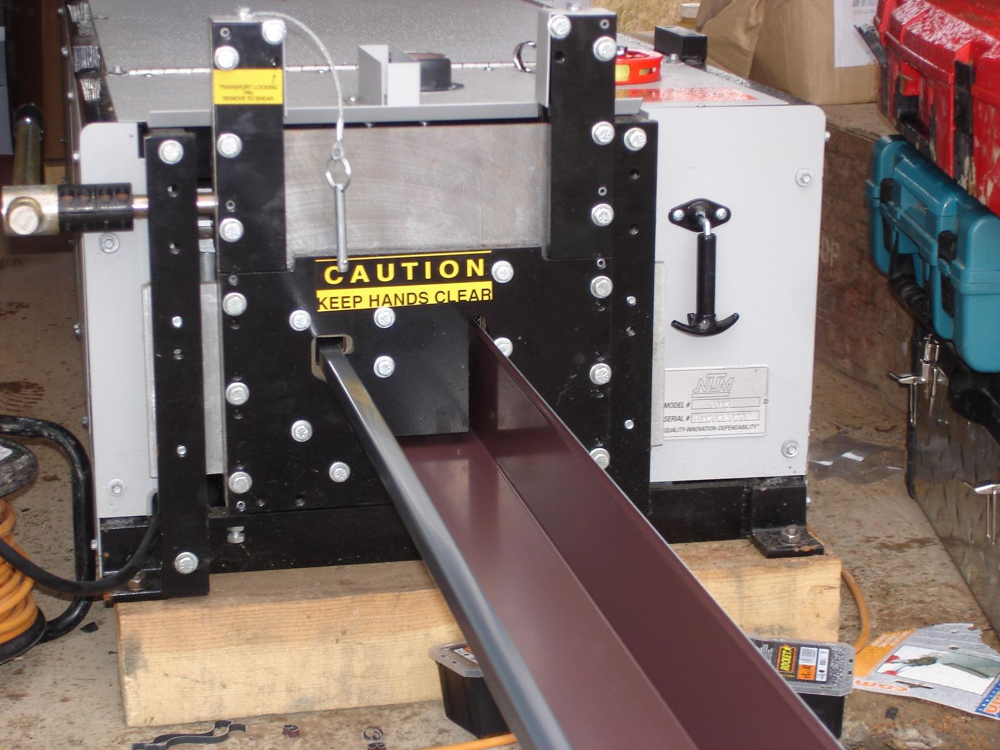
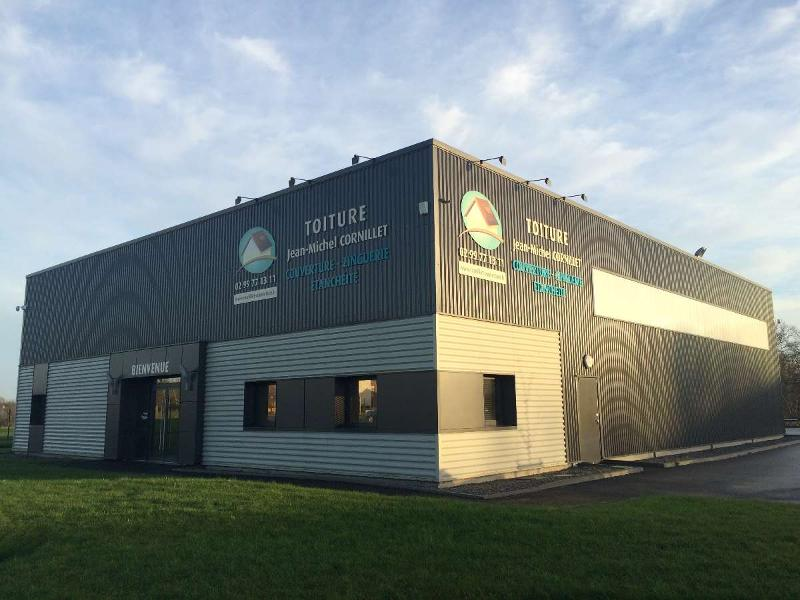

 



à saint-erblon situé à 10 min de Rennes


Bienvenue sur le site de CORNILLET Jean-Michel, entreprise spécialisée dans la couverture ardoise , étanchéité, zinguerie et installation Vélux à SAINT-ERBLON dans l'Ille-et-Vilaine (35), à 10 min. de Rennes.

Jean-Michel CORNILLET est dotée d'une expérience de 30 ans dans la couverture et a crée son entreprise en février 1999. L'entreprise CORNILLET a su évoluer avec ses collaborateurs en proposant de nombreux modèles de toits : traditionnels ou contemporains (toit plat, étanchéité, ardoises, zinc ou bac acier ...) permettant de répondre aux envies de chacun.
L'entreprise Jean-Michel CORNILLET référencée auprès des professionnels (constructeurs, promoteurs, architectes...), met aujourd'hui son savoir-faire au service de tous.
L'entreprise Jean-Michel CORNILLET intervient en Ille-et-Vilaine (35), et Loire-Atlantique (44)
N'hésitez pas à visionner nos photos, afin d'avoir un aperçu de nos réalisations !
Pour plus de renseignements, contactez-nous au
Merci de bien vouloir préciser vos coordonnées et votre demande.